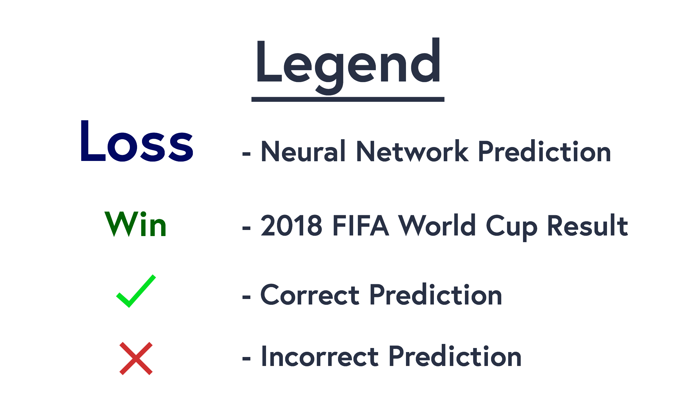
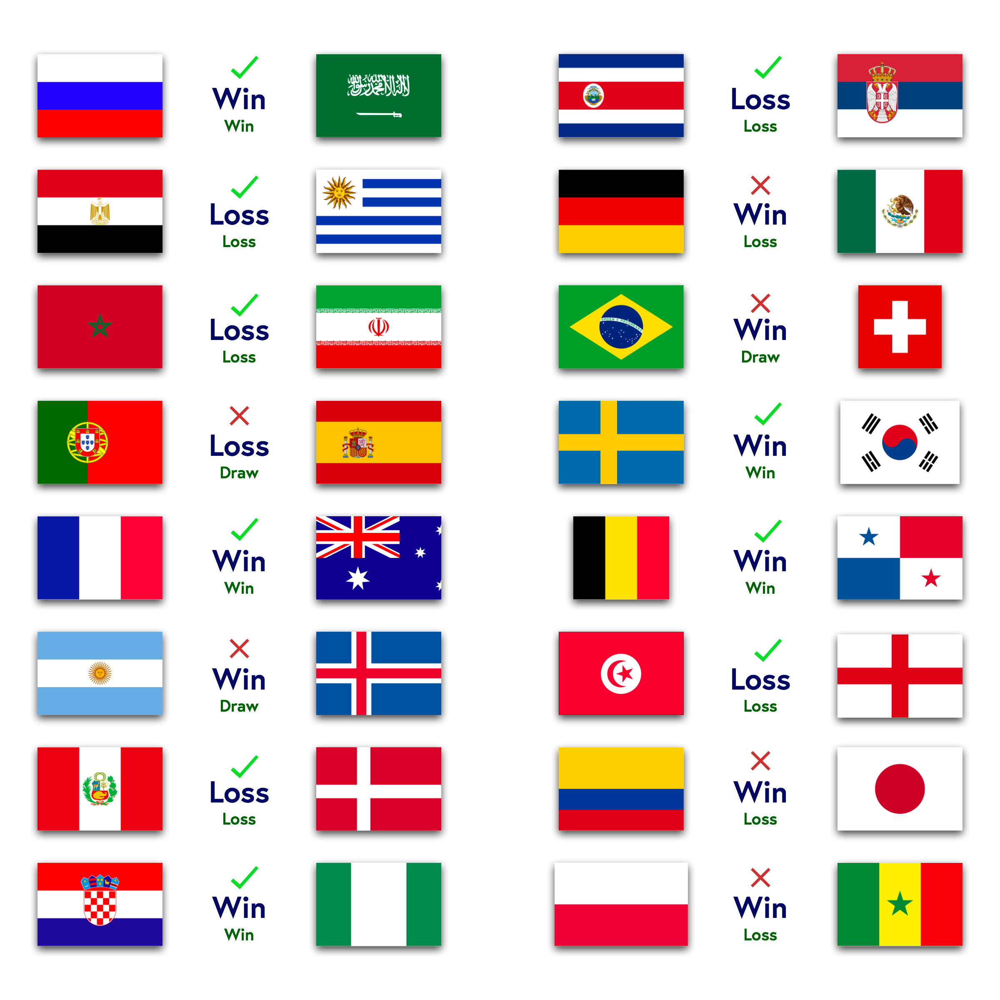
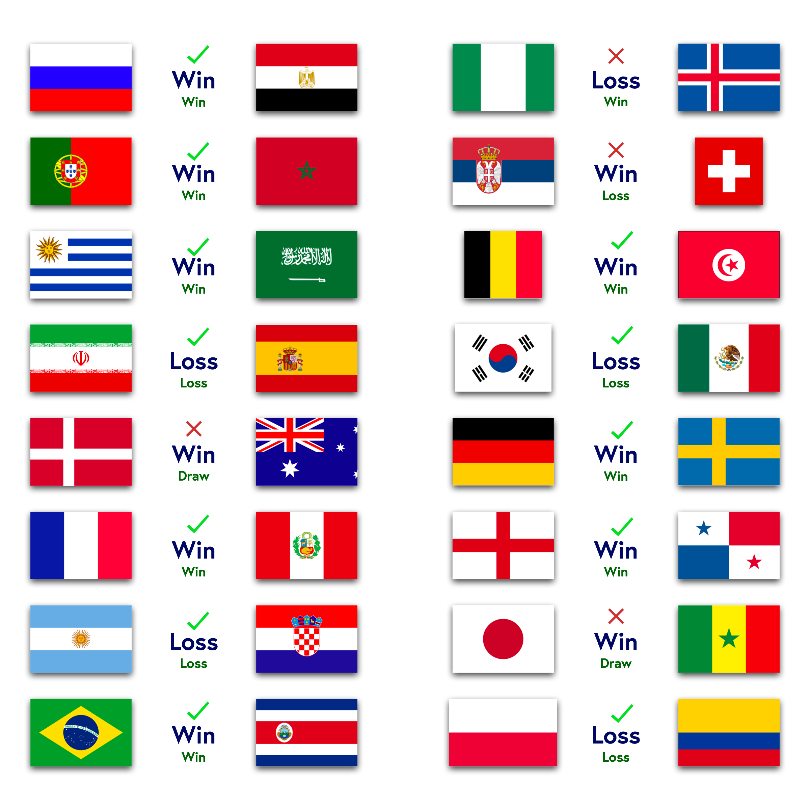
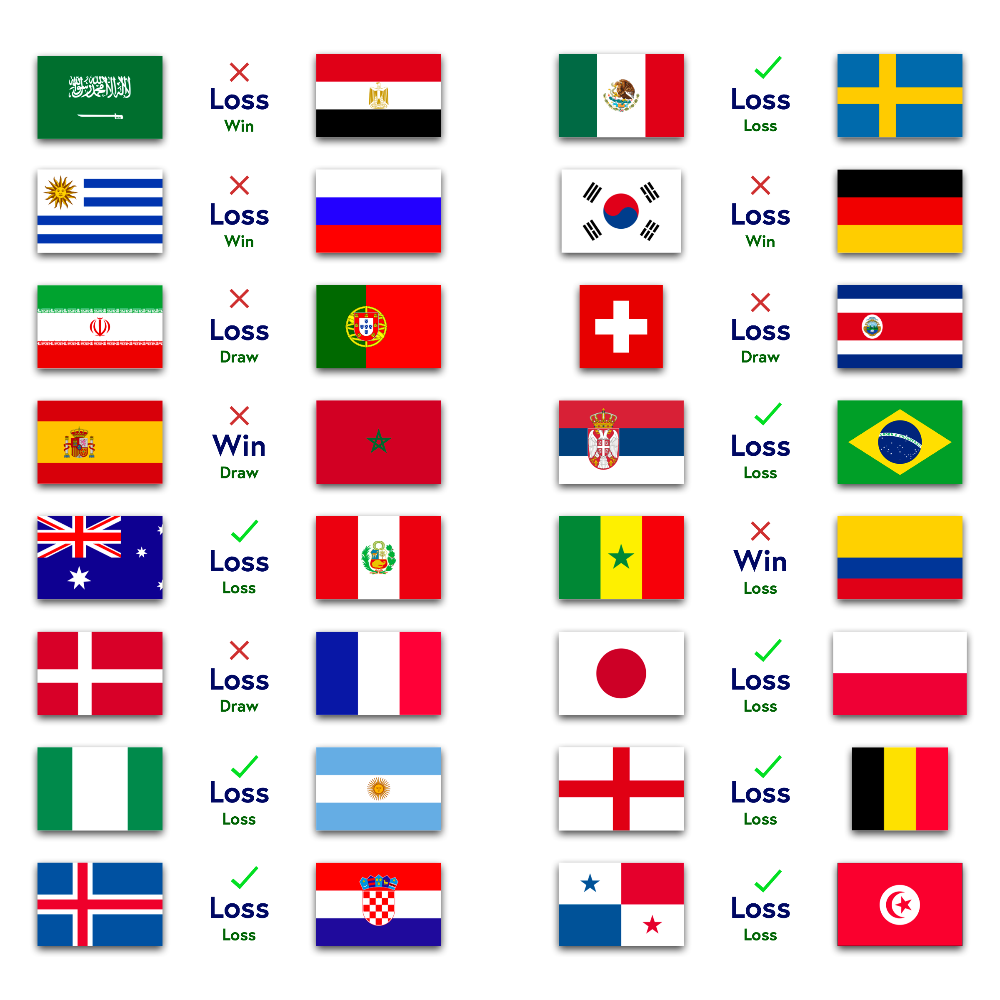
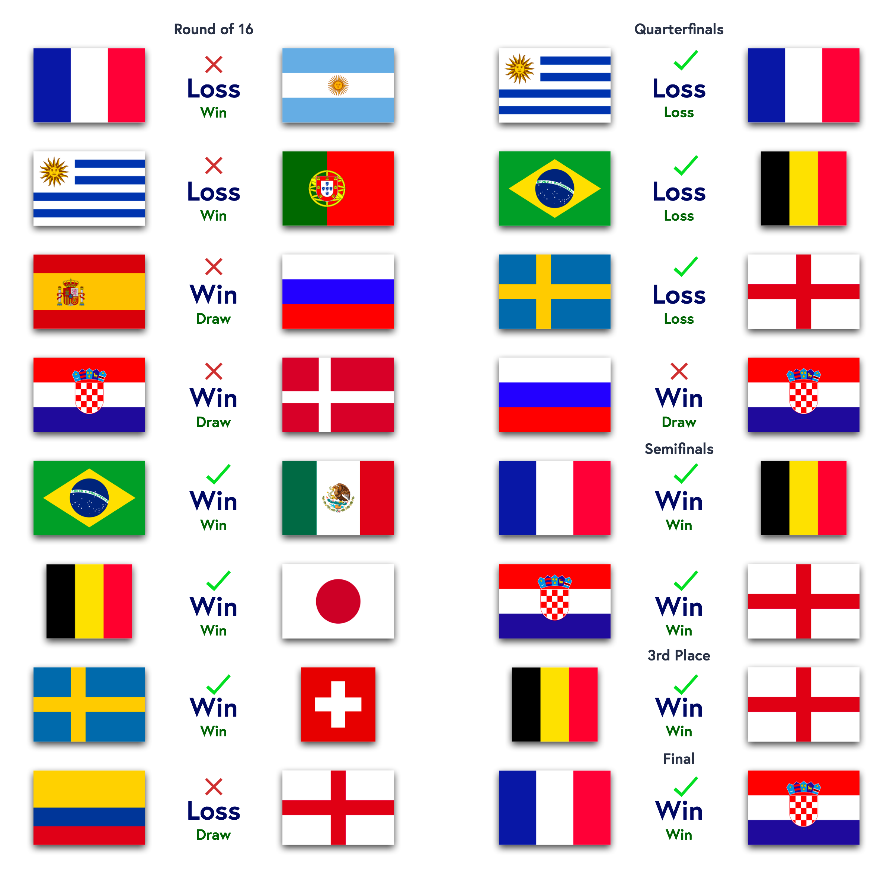

FIFA World Cup Match Prediction Using WIGGO and FIFA Rankings
CS 109A
Nathan Goldberg, Erik Johnsson, James Weichert
August, 2018
Abstract
The FIFA World Cup is the holy grail of global sports, but football has so far resisted the statistical revolution that has swept across American sports in the last two decades. Building on top of two existing ranking models, the FIFA Ranking and the WIGGO Ranking, we developed several classification models of different types to make predictions on World Cup data. Our results show that even complex mathematical models have a hard time over-performing Las Vegas odds and that abstaining from ever predicting draws seems like an optimal strategy, employed by both Vegas and our models.
2018 FIFA World Cup Match Predictions
Using a neural network trained on historical match data for international soccer matches, the predictions for the 2018 World Cup were generated and compared to the actual results of each game. The summary of the predictions is below.
Group Stage Matchday 1:
Group Stage Matchday 2:
Group Stage MAtchday 3:
Knockout Rounds:

This Project Website is also available at: Neural-Network.xyz